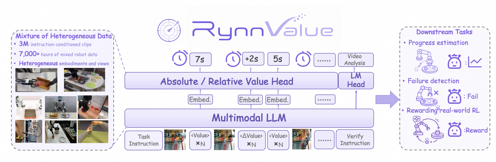
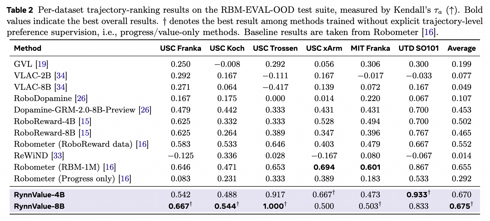
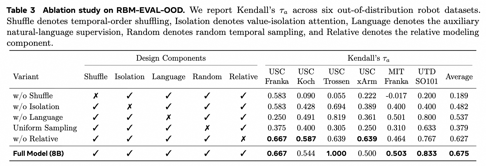

RynnValue: Scaling Robotic Value Foundation Models with Temporal Distance
A general-purpose value model that understands how far a robot is from completing an instruction—and turns that signal into progress estimation, failure detection, and rewards for real-world learning.
DAMO Academy, Alibaba Group Hupan Lab * Equal contribution · † Corresponding authors
RynnValue learns value through temporal distance across diverse robot embodiments and viewpoints.
01 · Method
Value, grounded in time.
A multimodal backbone predicts absolute and relative value while a language head verifies instruction alignment. Value-isolation attention keeps temporal supervision focused across long clips.


02 · Trajectory-ranking results
Generalizes beyond the training distribution.
RynnValue is evaluated on six out-of-distribution robot datasets. The 8B model achieves the strongest average trajectory-ranking result, while the ablation isolates the contribution of each design component.


03 · Reinforcement learning results
RynnValue as a real-world reward.
Online and offline robot learning consistently benefit from the richer value signal, with RynnValue highlighted in purple.